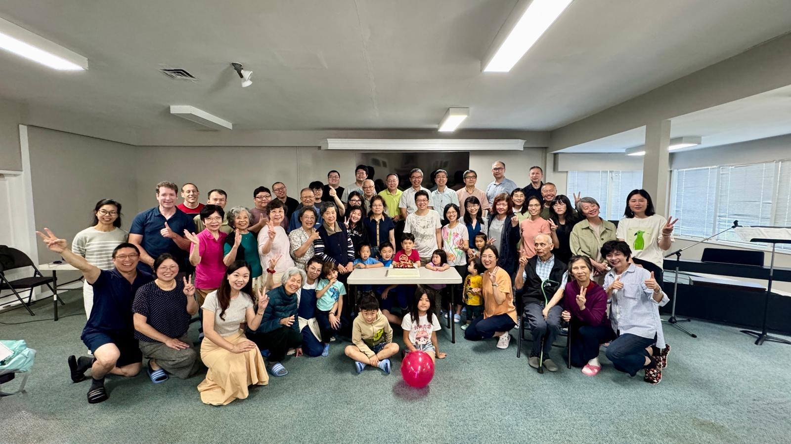
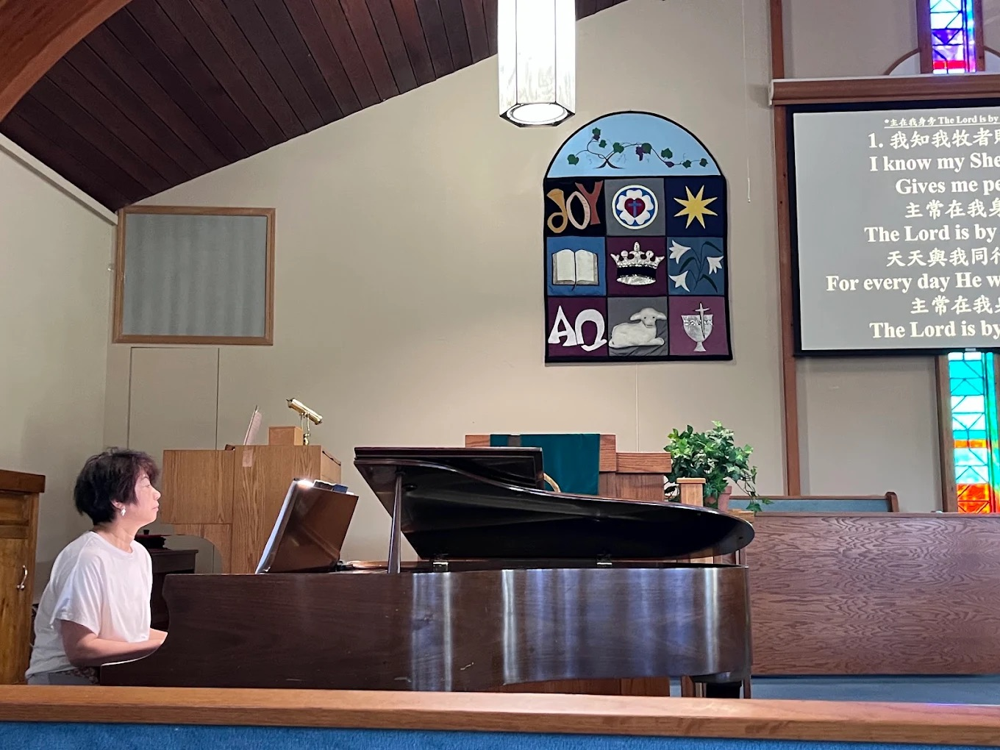
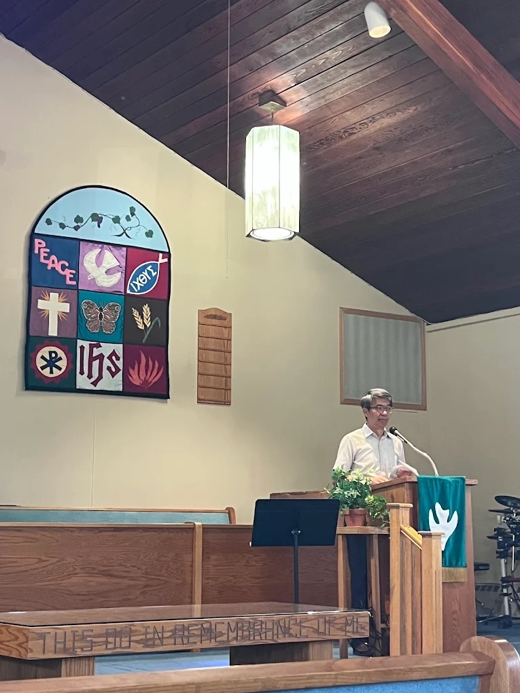
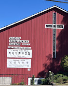

溫哥華安提阿教會是由中港台來的加拿大華人所組成的基督徒群體。這個大家庭的成員，在上帝眼中個個都是尊貴與獨特的。
因著愛的承載力，教會成為我們的方舟，在方舟裡，我們成為一個生命共同體——共享上帝所賜永恆的生命。
Vancouver Antioch Church is a Chinese Christian community formed by immigrants and families from mainland China, Hong Kong, and Taiwan — each person precious and unique in God's eyes.
Through the power of love, the church becomes our ark — within it we share in eternal life together.


主日崇拜是我們信仰生活的核心。在敬拜中，我們一起讚美上帝，聆聽聖經的話語，在弟兄姐妹的陪伴中靈命成長。歡迎您帶著開放的心前來。 Sunday worship is at the heart of who we are. Together we praise God, hear His Word, and grow in faith. Whoever you are, wherever you're from — you are welcome here.

由台灣恩約協會所開發，幫助基督徒在信仰、關係與生命各層面得到更新。結合聖經真理與實踐應用，使人在上帝的愛中找到根基。 Developed by Grace Covenant Association in Taiwan, the 3R Course helps Christians experience renewal in faith, relationships, and everyday life — rooted in Scripture and practical application.
認識 3R 課程 → Learn About 3R →
無論你的背景、故事或疑問，安提阿教會歡迎你，帶著真實的自己前來。 Whatever your background, story, or questions — you are welcome at Antioch. Come as you are.